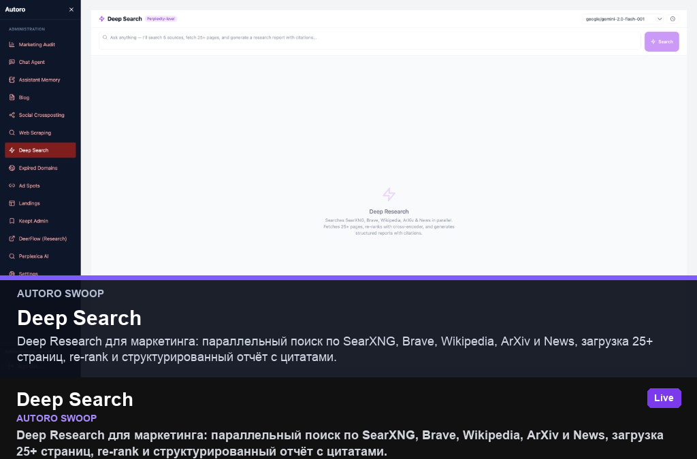

Deep Research для маркетинга: параллельный поиск по SearXNG, Brave, Wikipedia, ArXiv и News, загрузка 25+ страниц, re-rank и структурированный отчёт с цитатами.
- Задача
- Дать маркетологу Perplexity-уровень research внутри Swoop без смены инструментов.
- Моя роль
- Product-архитектура, UI, worker pipeline, routing моделей через OpenRouter.
- Стек
- React · TypeScript · FastAPI · deep-search-worker · OpenRouter · Gemini · SearXNG · Brave API · PostgreSQL
- Результат
- Live-модуль в админке swoop.autoro.tech; история запросов в deep_search_history.